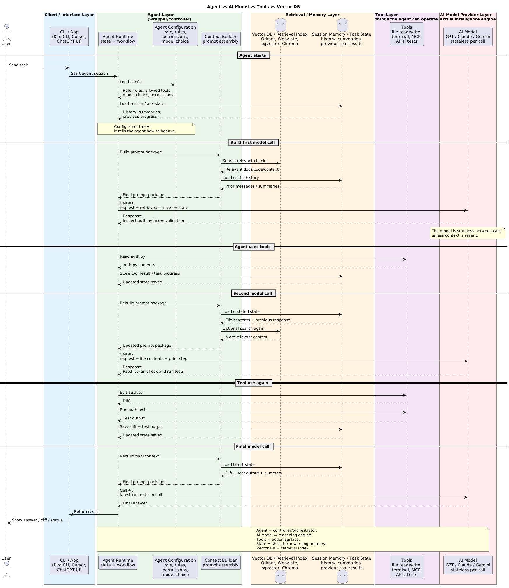

AI Agents
Use this page to understand systems in which a model chooses tools or next steps. The safest default is a deterministic workflow with narrowly bounded model decisions.
Part 5 of 7: Knowledge bases → AI Agents → Infrastructure and evaluation. Retrieval quality is already established before an agent uses retrieved evidence; this page focuses on runtime decisions and side effects.
1. LLM, tool use, workflow, and agent
- LLM: produces a probabilistic response from supplied context.
- LLM + tool: proposes a typed operation; the application validates and executes it.
- Workflow: code defines states, transitions, retries, and approvals; a model may perform individual steps.
- Agent: a controller repeatedly asks a model what action to take, observes the result, updates state, and decides whether to continue.
- A single function call is tool use, not necessarily an agent.
- “Agentic” means the model has meaningful runtime discretion over action or sequence.
Known process and transitions? → deterministic workflow
Known process, ambiguous subtask? → workflow with bounded model step
Unknown path, dynamic tool choice? → bounded agent
High-impact irreversible action? → explicit human approval

2. Deterministic versus agentic orchestration
- Prefer deterministic workflows when:
- business steps and transitions are known;
- auditability and repeatability matter;
- operations have financial, legal, or irreversible effects;
- reliable retries and compensation are required;
- strict latency and cost bounds exist.
- Consider an agent when:
- input is open-ended;
- useful tools cannot be selected using stable rules;
- the path depends on observations discovered at runtime;
- partial success and human escalation are acceptable.
- Strong hybrid pattern:
- deterministic outer state machine;
- model chooses among a small set of allowed next steps;
- application validates every transition;
- high-impact branches require approval.
- Avoid agents for simple classification, fixed API composition, known approval processes, or deterministic calculations.
3. Tool design and execution boundary
- A tool needs:
- narrow purpose and descriptive name;
- typed input/output schema;
- clear error categories;
- timeout and payload limits;
- least-privilege credentials;
- idempotency and audit behaviour;
- risk classification: read, reversible write, irreversible action.
- The controller must validate:
- authenticated user and tenant;
- permission for the exact resource and action;
- required/allowed fields and enum values;
- domain invariants such as account status and transaction limits;
- freshness of data used for the decision;
- whether human approval is required.
- Tool descriptions are part of the prompt and can be misunderstood.
- Do not expose broad tools such as unrestricted shell, SQL, HTTP, email, or file access when narrow domain operations are possible.
- Return bounded, structured observations; large raw responses increase cost and prompt-injection exposure.
4. Planning and execution loops
- Direct action: model selects one tool, observes once, then answers.
- Plan then execute: model proposes a plan; controller validates and executes steps.
- ReAct-style loop: model alternates between action selection and observations.
- State machine agent: code constrains legal states while the model chooses permitted transitions.
- Reflection/critique: another model pass checks work:
- can catch omissions;
- is still probabilistic and correlated with the original model;
- does not replace tests or business validation.
- Every loop needs hard budgets:
- maximum steps and repeated actions;
- wall-clock deadline;
- input/output tokens;
- tool calls and parallelism;
- monetary spend;
- maximum observation size.
- Termination outcomes should be explicit: completed, partial, needs approval, needs user input, failed safely, or budget exhausted.
5. State and memory
- Conversation state: recent messages needed for the current interaction.
- Task state: goal, plan, current step, tool results, errors, and approvals.
- Working memory: temporary summaries or facts selected for the current reasoning loop.
- Long-term memory: durable preferences, facts, or past outcomes retrieved later.
- Durable memory requires:
- source/provenance;
- owner and tenant;
- confidence and timestamp;
- retention and deletion;
- user correction;
- access control;
- versioning and conflict rules.
- A vector store is a retrieval mechanism, not inherently trustworthy memory.
- Do not save model inferences as user facts without validation or clear labelling.
- Persist state before and after side effects so retries can determine what occurred.
| Memory/state type | Lifetime | Typical contents | Control to remember |
|---|---|---|---|
| Short-term/session context | One conversation or task | recent messages, current plan, recent tool observations | keep bounded and expire it |
| Persistent memory | Across sessions | validated preferences, durable summaries, approved facts | provenance, ownership, retention, correction, and access control |
| Business system of record | Durable operational record | orders, balances, entitlements, asset state | model memory never replaces it |
Model proposes an action
↓
Application/tool authorizes principal + resource + action
↓
Tool executes with least privilege
↓
Durable state records result / idempotency key
The model choosing create_work_order does not authorize it. This boundary applies equally to tools, memory writes, and retrieval.
6. MCP
- The Model Context Protocol standardizes how clients discover and use tools, resources, and prompts from servers.
- MCP improves interoperability; it does not create trust or authorization.
- Treat an MCP server as:
- a network dependency;
- a software supply-chain dependency;
- a source of untrusted content;
- a holder of potentially powerful credentials.
- Controls:
- authenticate client and server;
- allowlist servers and capabilities;
- expose only required tools/resources;
- keep credentials outside model-visible context;
- validate tool arguments and returned content;
- apply network egress restrictions;
- pin/review versions and audit calls.
- A malicious resource may tell the model to ignore policy or exfiltrate data; instruction hierarchy alone is not an adequate defence.
7. Multi-agent systems
- Multiple agents are justified only when separate roles, permissions, models, contexts, or parallel work create measurable value.
- Possible patterns:
- coordinator delegates bounded specialist tasks;
- independent workers run safe read-only research in parallel;
- reviewer checks an output against a separate rubric;
- handoff routes work between different trust domains.
- Added costs:
- duplicated work and context;
- inconsistent plans;
- more failure and retry paths;
- larger attack surface;
- difficult attribution and debugging;
- latency and token multiplication.
- Do not create multiple personas when one workflow with clear functions is sufficient.
8. Failure modes and controls
- Infinite/repeated loops:
- detect repeated state/action pairs;
- enforce step, time, token, and spend budgets.
- Hallucinated parameters:
- use strict schemas, enums, existence checks, and tool-side authorization.
- Prompt injection:
- separate instructions from data;
- minimize tool privilege;
- block secrets and unauthorized outbound destinations.
- Duplicate side effects:
- use idempotency keys, durable execution records, and safe retry semantics.
- Partial failure:
- model compensation steps explicitly;
- report what completed and what did not.
- State corruption:
- version transitions;
- use transactional writes where needed;
- reconstruct from an append-only event/audit history.
- Cost/latency explosion:
- parallelize only independent safe reads;
- summarize observations;
- route simple steps to smaller models;
- stop with a partial result rather than loop indefinitely.
- Excessive autonomy:
- require approval for external communications, payments, deletions, privilege changes, and other high-impact actions.
9. Evaluation and observability
Evaluate the agent loop, not retrieval or answer grounding again. For those RAG measurements, see AI Knowledge Bases; for release gates and operational evaluation, see AI Infrastructure and Evaluation.
- Offline scenarios should test:
- correct tool selection;
- argument validity and semantic correctness;
- permission denial;
- tool timeout/error recovery;
- loop termination;
- prompt-injection resistance;
- task completion within budget.
- Production traces should capture:
- model request/version;
- proposed action;
- policy and approval decision;
- tool request/result reference;
- state transition;
- token, latency, and cost;
- final outcome and user feedback.
- Key metrics:
- task completion rate;
- tool success and invalid-argument rate;
- average/p95 steps per task;
- approval and escalation rate;
- duplicate-action incidents;
- cost and latency per completed task.
Continue to AI Infrastructure and Evaluation for the platform controls, tracing, and release process that operate around an agent.